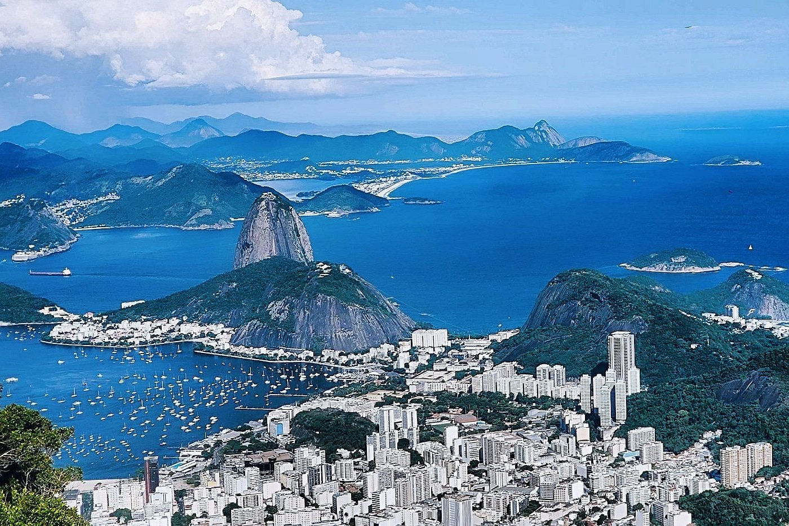
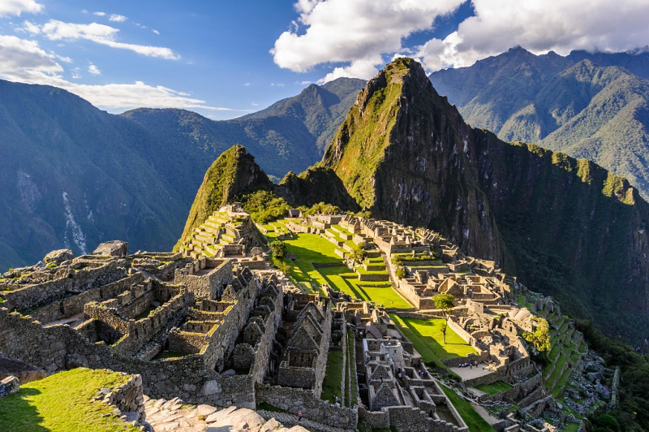

BIENVENIDOS A VIAJES HORIZONTE
Somos una empresa dedicada a crear experiencias turísticas simples, seguras y memorables para familias, estudiantes y viajeros que quieren conocer nuevos lugares. Nuestro objetivo es ayudarte a planificar cada viaje con información clara sobre destinos, actividades y recomendaciones útiles para disfrutar al máximo.
En esta página te mostramos algunos destinos populares de Sudamérica que combinan naturaleza, historia y cultura. La idea es inspirarte para tu próxima aventura y ofrecerte una guía inicial para empezar a organizar tu recorrido.
Conocer más opciones de viaje
LUGARES RECOMENDADOS
BARILOCHE

Bariloche es uno de los destinos más visitados del sur argentino por su combinación de paisajes de montaña, lagos cristalinos y bosques. Durante todo el año ofrece actividades para distintos gustos: caminatas, paseos en bicicleta, excursiones en barco y visitas a miradores con vistas panorámicas.
Además de su naturaleza, la ciudad tiene una propuesta gastronómica muy reconocida, especialmente por su chocolate artesanal y sus casas de té. Es un lugar ideal para quienes buscan descansar, hacer turismo fotográfico y disfrutar de un entorno tranquilo con aire puro.
Más información sobre Bariloche- Subir al Cerro Campanario.
- Recorrer el Centro Cívico.
- Probar chocolate artesanal.
RIO DE JANEIRO

Río de Janeiro es una ciudad vibrante que mezcla naturaleza urbana, playas extensas y una identidad cultural muy fuerte. Sus paisajes entre montañas y mar la convierten en un destino atractivo para turistas que desean conocer lugares icónicos y vivir una experiencia dinámica.
La ciudad también destaca por su vida cultural, su música y su ambiente festivo. Recorrer sus barrios, visitar sus miradores y caminar por sus playas permite conocer diferentes caras de Río, desde zonas tradicionales hasta sectores modernos con gran actividad turística.
Sitio oficial de turismo de Río- Visitar el Cristo Redentor.
- Caminar por Copacabana.
- Conocer el Pan de Azúcar.
CUSCO

Cusco fue la capital del Imperio Inca y hoy es uno de los centros históricos más importantes de América Latina. Sus calles de piedra, iglesias coloniales y restos arqueológicos muestran la mezcla entre herencia andina y arquitectura española.
Muchos viajeros eligen Cusco no solo por su valor histórico, sino también porque funciona como punto de partida para conocer el Valle Sagrado y Machu Picchu. Es un destino ideal para aprender sobre cultura, historia y tradiciones locales mientras se recorre una ciudad llena de vida.
Más información sobre Cusco- Recorrer la Plaza de Armas
- Visitar Sacsayhuamán
- Planear una excursión a Machu Picchu